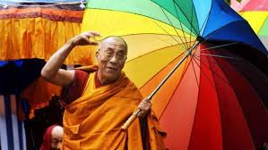
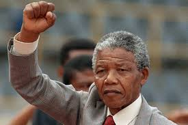
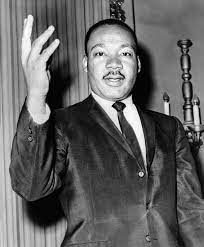

Mahatma Gandhi
Mahatma Gandhi Mohandes Karamchand Gandhi ( 2 de octubre de 1869 - 30 de enero de 1948) fue el primer líder del movimiento de independencia indio contra el dominio británico. Mediante la desobeciencia civil no violenta, Gandhi condujo a la India a la independencia e inspiró movimientos de drechoss civiles y liberación en todo el mundo. El título honorífico de Mahatma (venerable, en sánscrito) se le empezó a aplicar en 1914 en Sudáfrica.
Gandhi fue encarcelado muchas veces y durqante muchos años, tanto en África como en India. Gandhi intentó practicar la no violencia en todas las situaciones y aconsejaba a los demás hacer lo mismo.
Si alguna vez no te dan la sonrisa esperada, sé generoso y da la tuya. Nadie tienen tanta necesidad de una sonrisa como aquel que no sabe sonreir a los demás.
Aprendí que el coraje no era la ausencia de miedo, sino el triunfo sobre él. El valiente no es el que no tiene miedo, sino el que vence ese tomor.
Hemos aprendido a volar como los pájaros, a nadar como los peces; pero no hemos aprendido el sencillo arte de vivir como hermanos.
